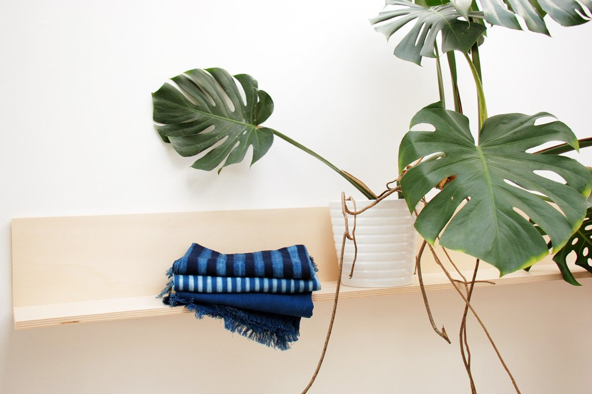

NORTHERNISMEUR CARTIndigo

A little late to the indigo party but welcoming my order of natural indigo dyed tote
bags and table cloths from Tensira a few weeks ago made me want to share a few facts about
this deep midnight blue, often referred to as blue gold...